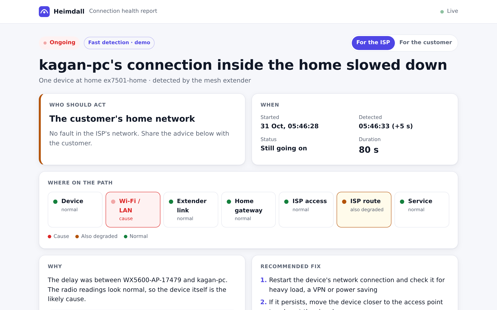
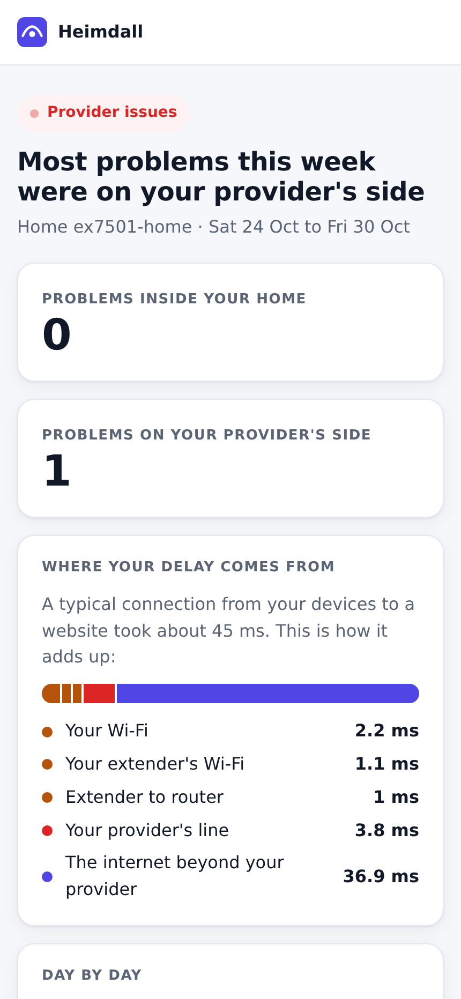

A small probe on the home gateway and the Wi-Fi extender measures every part of the path, and tells within seconds where the delay is and who should act.
Probes on the gateway and the extender · typical latency of each part on 30 Oct, from the daily analysis
Every client connection's Wi-Fi and internet round trips, the extender link, the ISP's hops, 37 services, and the same services from AWS for comparison.
Baselines per device and service. A slowdown becomes an incident with a likely cause: weak Wi-Fi, the extender, the ISP's line, its route to a service, DNS, or the service itself.
A Slack alert, and a status page for the ISP and for the customer: what happened, why, who should act and the fix. Grafana for us, a weekly report for the home.
No hostnames or server addresses are stored · 8 MB static binary on a Zyxel EX7501 gateway and a WX5600 extender · AWS: Lambda, Firehose, Athena, DynamoDB, Grafana
demo slow 40
Adds 40 ms to my laptop's traffic. It is on the extender's Wi-Fi.Slack
The extender's probe sees kagan-pc's hop jump from 1 ms to 41 ms.status page
The customer's home network, not the ISP: the ISP's line, its route and the services were normal.demo fix
Resolved about 20 s later, with the real duration.

Demo mode runs a second detector on 5-second buckets. The regular one waits 10 minutes before it alerts.